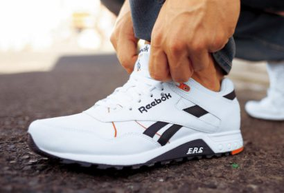

Спортивная обувь
Практически в каждом спортивном магазине нам предлагают широкий ассортимент кроссовок. Они различаются по производителю, стоимости, цвету, а также по функциональности. Но как выбрать кроссовки — знают немногие. Поэтому часто покупатель оказывается в полной растерянности, не зная, что же ему приобрести. Ведь если бездумно купить то, что первое понравилось, можно сильно разочароваться вскоре после покупки. Источник: http://vashsport.com/kak-vybrat-krossovki/ Чтобы приобрести по-настоящему качественную спортивную обувь, к такой покупке необходимо должным образом подготовиться, изучив основные критерии верного выбора. Давайте же наконец узнаем, как правильно выбрать кроссовки. Источник: http://vashsport.com/kak-vybrat-krossovki/ Кроссовки — это не прогулочная обувь, которую можно выбирать, ориентируясь только на параметр «нравится/не нравится». Кроссовки должны жёстко фиксировать голеностоп, выдерживать большую нагрузку, ноге в них должно быть комфортно. Источник: http://vashsport.com/kak-vybrat-krossovki/ Очень важно, чтобы стелька была съемной — это позволит поддерживать гигиену обуви. Если спортивные кроссовки источают неприятный запах, их использовать больше нельзя, даже когда в остальном они сохранили отличное состояние. Источник: http://vashsport.com/kak-vybrat-krossovki/